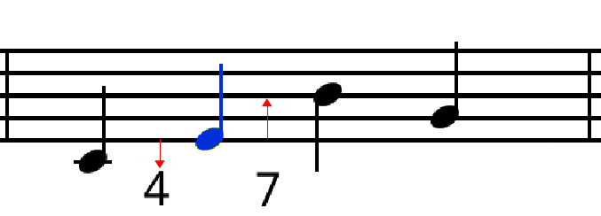
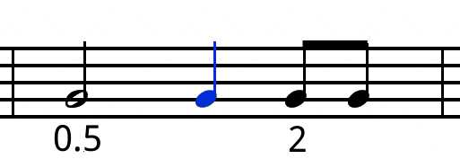
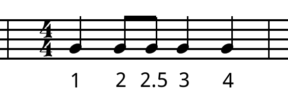

國立臺灣大學電機資訊學院電機工程學系
碩士論文 (初稿)
Department of Electrical Engineering
College of Electrical Engineering and Computer Science
National Taiwan University
Master Thesis (DRAFT)
利用結構性支撐向量機的具音樂表現能力之半自動電腦演奏
系統
A Semi-automatic Computer Expressive Music Performance
System Using Structural Support Vector Machine
呂 行
Shing Hermes Lyu
指導教授：鄭士康博士
Advisor: Shyh-Kang Jeng, Ph.D.
中華民國 103 年 6 月
June, 2014

電
國
機
立
工
臺
程
灣
學
大
系
學
(
碩
初稿
士
)
論
文
自動電腦演奏系統
利
用
結
構
性
支
撐
向
量
機
的
具
音
樂
表
現
能
力
之
半
呂 行
103
6

國立臺灣大學（碩）博士學位論文
口試委員會審定書
論文中文題目
論文英文題目
本論文係呂行君（R01921032）在國立臺灣大學電機工程學研究
所完成之碩士學位論文，於民國 103 年○○月○○日承下列考試委員
審查通過及口試及格，特此證明
口試委員：
（簽名）
（指導教授）
系主任、所長 （簽名）
（是否須簽章依各院系所規定）

ii

中文 要
電腦合成的音樂一向被認為是僵硬、機械化而且沒有音樂表現能
力。因此能夠產生具有表現能力的電腦自動演奏系統將會對音樂產業、
個人化娛樂以及表驗藝術領域有重大的影響。在這篇論文中，我們藉
由隱藏式馬可夫模型結構的結構性支撐向量機 (SVM-HMM) 來設計一
個可以產生具有表現能力音樂的電腦自動演奏系統。我們邀請六位研
究生錄製了克萊門蒂（Muzio Clementi）的小奏鳴曲集 Op.36。我們手
動將這些錄音分割成樂句，並且利用程式從中抽取出音樂特徵。這些
音樂特徵藉由 SVM-HMM 訓練成數學模型後，可以利用這個數學模型
來演奏訓練過程中沒有見過的樂譜（需要手動標注樂句）。此系統目前
只能支援單音旋律。問卷調查的結果顯示，對於業餘或專業的音樂家
來說，本系統產生的音樂尚不能達到真人的演奏水準，但是沒有音樂
背景的受試者給予本系統產生的音樂的分數已經與真人演奏不相上下。
關鍵字：電腦自動演奏、結構性支撐向量機、支撐向量機
iii

Abstract
Computer generated music is known to be robotic and inexpressive. A
computer system that can generate expressive performance can potentially
have significant impact on music production industry, personalized entertain-
ment or even art. In this paper, we have designed and implemented a system
that can generate expressive performance using structural support vector ma-
chine with hidden Markov model output (SVM-HMM). We recorded six sets
of Muzio Clementi's Sonatina Op.36 performed by six graduate students. The
recordings and scores are manually split into phrases and had their musical
features automatically extracted. Using the SVM-HMM algorithm, a math-
ematical model of expressive performance knowledge is learned from these
features. The trained model can generate expressive performances for pre-
viously unseen scores (with user-assigned phrasing). The system currently
supports monophonic music only. Subjective test shows that for amateur and
professional musician, the generated performance still need improvements to
be comparable to human recording, but the generated performance received
nearly the same rating as human recordings from participants without music
background.
Key words: Computer Expressive Performance, Performance Rendering,
Structural SVMs, Support Vector Machines.
iv

Table of Contents
試
會
i
ii
中文 要
iii
Abstract
iv
Table of Contents
v
List of Figures
viii
List of Tables
x
1
Introduction
1
1.1
Motivation . . . . . . . . . . . . . . . . . . . . . . . . . . . . . . . . . .
1
1.2
Goal and Contribution
. . . . . . . . . . . . . . . . . . . . . . . . . . .
2
1.3
Chapter Organization . . . . . . . . . . . . . . . . . . . . . . . . . . . .
2
2
Previous Works
3
2.1
Various Goals and Evaluation . . . . . . . . . . . . . . . . . . . . . . . .
3
2.2
Researches Classified by Methods Used . . . . . . . . . . . . . . . . . .
5
2.3
Additional Specialties . . . . . . . . . . . . . . . . . . . . . . . . . . . .
7
3
Proposed Method
9
3.1
Overview . . . . . . . . . . . . . . . . . . . . . . . . . . . . . . . . . .
9
v

3.2
A Brief Introduction to SVM-HMM . . . . . . . . . . . . . . . . . . . .
10
3.3
Learning Performance Knowledge . . . . . . . . . . . . . . . . . . . . .
15
3.3.1
Training Sample Loader . . . . . . . . . . . . . . . . . . . . . .
16
3.3.2
Features Extraction . . . . . . . . . . . . . . . . . . . . . . . . .
16
3.3.3
SVM-HMM Learning . . . . . . . . . . . . . . . . . . . . . . .
17
3.4
Performing Expressively . . . . . . . . . . . . . . . . . . . . . . . . . .
19
3.4.1
SVM-HMM Generation . . . . . . . . . . . . . . . . . . . . . .
20
3.4.2
MIDI Generation and Synthesis . . . . . . . . . . . . . . . . . .
20
3.5
Features . . . . . . . . . . . . . . . . . . . . . . . . . . . . . . . . . . .
21
3.5.1
Score Features . . . . . . . . . . . . . . . . . . . . . . . . . . .
21
3.5.2
Performance Features . . . . . . . . . . . . . . . . . . . . . . . .
23
3.5.3
Normalizing Onset Deviation
. . . . . . . . . . . . . . . . . . .
24
4
Corpus Preparation
26
4.1
Existing Corpora . . . . . . . . . . . . . . . . . . . . . . . . . . . . . .
26
4.2
Corpus Specification . . . . . . . . . . . . . . . . . . . . . . . . . . . .
27
4.3
Implementation . . . . . . . . . . . . . . . . . . . . . . . . . . . . . . .
30
4.3.1
Score Preparation . . . . . . . . . . . . . . . . . . . . . . . . . .
30
4.3.2
MIDI Recording . . . . . . . . . . . . . . . . . . . . . . . . . .
30
4.3.3
MIDI Cleaning and Phrase Splitting . . . . . . . . . . . . . . . .
31
4.4
Results . . . . . . . . . . . . . . . . . . . . . . . . . . . . . . . . . . . .
31
5
Experiments
36
5.1
Onset Deviation Normalization . . . . . . . . . . . . . . . . . . . . . . .
36
5.2
Parameter Selection . . . . . . . . . . . . . . . . . . . . . . . . . . . . .
40
5.2.1
SVM-HMM-related Parameters . . . . . . . . . . . . . . . . . .
40
5.2.2
Quantization Parameter . . . . . . . . . . . . . . . . . . . . . . .
42
5.3
Human-like Performance . . . . . . . . . . . . . . . . . . . . . . . . . .
44
6
Conclusions
50
vi

Bibliography
50
A Software Tools Used in This Research
60
vii

List of Figures
3.1
High-level system architecture . . . . . . . . . . . . . . . . . . . . . . .
10
3.2
Learning phase flow chart
. . . . . . . . . . . . . . . . . . . . . . . . .
15
3.3
Performing phase flow chart . . . . . . . . . . . . . . . . . . . . . . . .
19
3.4
Interval from/to neighbor notes . . . . . . . . . . . . . . . . . . . . . . .
22
3.5
Relative duration with the previous/next note . . . . . . . . . . . . . . .
22
3.6
Metric position . . . . . . . . . . . . . . . . . . . . . . . . . . . . . . .
23
3.7
Systematic bias in onset deviation . . . . . . . . . . . . . . . . . . . . .
24
4.1
Movement length (notes) distribution
. . . . . . . . . . . . . . . . . . .
33
4.2
Movement length (phrases) distribution . . . . . . . . . . . . . . . . . .
35
4.3
Phrase length (notes) distribution . . . . . . . . . . . . . . . . . . . . . .
35
5.1
Onset deviations by aligning last note onset . . . . . . . . . . . . . . . .
37
5.2
Onset deviations by aligning last notes note-off . . . . . . . . . . . . . .
38
5.3
Onset deviations using automated normalization method . . . . . . . . .
39
5.4
Median distance between generated performances and recordings for dif-
ferent ε's . . . . . . . . . . . . . . . . . . . . . . . . . . . . . . . . . . .
41
5.5
Execution time for different ε's . . . . . . . . . . . . . . . . . . . . . . .
42
5.6
Median distance between generated performances and recordings for dif-
ferent C's . . . . . . . . . . . . . . . . . . . . . . . . . . . . . . . . . .
43
5.7
Execution time for different C's . . . . . . . . . . . . . . . . . . . . . . .
43
5.8
Execution time for differnt number of quantization levels . . . . . . . . .
45
viii

5.9
Distribution of onset deviation values from full corpus versus single per-
former's corpus . . . . . . . . . . . . . . . . . . . . . . . . . . . . . . .
46
5.10 Distribution of duration ratio values from full corpus versus single per-
former's Corpus . . . . . . . . . . . . . . . . . . . . . . . . . . . . . . .
47
5.11 Distribution of MIDI velocity values from full corpus versus single per-
former's corpus . . . . . . . . . . . . . . . . . . . . . . . . . . . . . . .
47
ix

List of Tables
4.1
Clementi's Sonatinas Op.36
. . . . . . . . . . . . . . . . . . . . . . . .
28
4.2
Number of mistakes in the corpus, blank cell means the performer didn't
record the piece . . . . . . . . . . . . . . . . . . . . . . . . . . . . . . .
32
4.3
Total recorded phrases and notes count . . . . . . . . . . . . . . . . . . .
34
4.4
Phrases and notes count for Clementi's Sonatina Op.36 . . . . . . . . . .
34
5.1
Average rating for generated performance and human recording
. . . . .
48
5.2
Average rating for generated performance and human recording under dif-
ferent part of the corpus . . . . . . . . . . . . . . . . . . . . . . . . . . .
49
5.3
Number of participants who gives higher rating to generated performance,
human recordings or equal rating . . . . . . . . . . . . . . . . . . . . . .
49
5.4
Number of participants who gives higher rating to generated performance,
human recordings or equal rating under different part of the corpus . . . .
49
x

Chapter 1
Introduction
1.1
Motivation
From the mechanical music performing automata from middle ages, to the latest Japanese
virtual signer Hatune Miku, there had been many attempts to create automated systems that
perform music. However, many of these systems can only generate predefined expression.
State-of-the-art text-to-speech system can already generate fluid and natural speech, but
computer performance still can't perform very expressively. Therefore, many researcher
have devoted their effort to develop systems that can automatically or semi-automatically
perform music expressively. There is even a biannual contest for such systems called
Music Performance Rendering Contest (RenCon) [1]. The RenCon roadmap suggest that
by 2050, they wish that a computer performer can win the Chopin International Piano
Contest.
There are many potential applications for a computer expressive performance system,
many commercial music typesetting software like Finale [2] and Sibelius [3] already have
expressive playback features built-in. For entertainment industry, such system can provide
personalized music listening experience. For music production industry, this technology
can save a lot of cost on hiring musicians and license fees. Such system also opens up
new opportunity in art, such as human-machine co-performance or interactive multimedia
installation. In academia, researchers can use this technology to study the performance
style of musicians, or restore historical recording archive.
1

1.2
Goal and Contribution
The ultimate goal of this paper is to be able to play any music in any expressive style
specified. But due to technical and time constrains, we narrow down our goal to building
a computer expressive performance system that performs monophonic music phrases by
off-line supervised learning. The phrasing need to be annotated by human, so it's a semi-
automatic system.
The major contribution of this paper is that we apply structural support vector machine
on expressive performance problem. There exist no previous work that uses the discrim-
inative learning power of structural support vector machine with hidden Markov model
output (SVM-HMM) on computer expressive performance question. We also developed
methods and tools to generate a expressive performance corpus.
1.3
Chapter Organization
In Chapter 2, we will give an overview of previous works and their varying goals, these
works will be grouped by the way they learn performance knowledge, and we will discuss
some additional specialities such as special instrument model or special user interaction
pattern. In Chapter 3, we will first give a brief introduction to the mathematical back-
ground of SVM-HMM, and then give a top-down explanation to the proposed method. In
Chapter 4, we will explain how the corpus used for training is designed and implemented.
In Chapter 5, we will discuss several experiments that demostrates design trade-offs and
the subjective test results. Finally, we have included an appendix that presents some soft-
ware tools used in this research, which may be helpful for other researchers in the computer
music field.
2

Chapter 2
Previous Works
2.1
Various Goals and Evaluation
The general goal of a computer expressive performance system is to generate expres-
sive music, as opposed to the robotic and dull expression of rendered MIDI. But the defi-
nition of “expressive” is very vague and ambiguous, so each research will need to define a
more precise and measurable goal. The following are the most popular goals a computer
expressive performance system wants to achieve:
1. Perform music notations in a non-robotic way (no specific style).
2. Reproduce a human performance or a certain musician's style.
3. Accompany a human performance.
4. Validate a musicological theory of expressive performance.
5. Directly render computer-composed music works.
Some systems try to perform music notations in a non-robotic way in a general sense,
without a certain style in mind. These systems has been employed in music typesetting
softwares, like Finale [2] and Sibelius [3], to play the notation expressively. Most systems
will implicitly include this goal.
Systems that are designed to reproduce certain human performance or style are usually
designed and trained using a particular performer's recordings. One commercial example
3

is the Zenph re-performance CD [4]. This CD contains music performed by an expressive
performance model of Rachimaninov's style, but Rachimaninov had never recorded these
pieces in his lifetime.
Accompaniment systems try to render expressive music that act as an accompaniment
for a human performance. The challenge is that the system must be able to track the
progress of a human performance and adaptively render the accompaniment in real-time.
One commercial example is Cadenza [5], using the technology created by Christopher
Raphel. It can track the soloist's performance and play the accompaniment orchestral part
accordingly.
Another goal is to validate musicological theories. Musicologist may propose theories
on expressive music performance, by building a generative model, they can validate their
theories. These systems may focus more on the specific phenomenon that the theory tries
to explain instead of generating music that is pleasant to human.
Finally, some systems combines computer composition with expressive performance.
These systems have a big advantage because the intention of the composer can be shared
with the performer. Other systems that performs past compositions can only guess the
composer's intention by analyzing the score notation. These systems usually has their
own data structure to represent music, which can contain more information than tradi-
tional music notation, but the performance system is not backward compatible with past
compositions.
Because of the high diversity in the goals they want to achieve, it is very hard to make
fair comparison between systems. But we can still evaluate the capability of these systems
by the following three key indicators proposed by [6]:
1. Expressive expression capability
2. Polyphonic capability
3. Performance creativity
Expressive expression capability can range from very high level structural expression
(e.g. tempo contrast between sections) to note level expression (e.g. onset, loudness,
4

duration) or even sub-note expression (e.g. loudness envelop, timbre). Most systems can
generate note-level expression, but higher or lower level expressions are much rare.
Polyphonic capability indicates if the system can perform polyphonic input. Poly-
phonic systems are more challenging than monophonic ones because they requires syn-
chronization between voices.
Performance creativity measures the ability of the system to create novel expression.
The desired level of creativity varies from goal to goal. A system aiming to recreate
human performance may want to produce deterministic expressions based on the learning
material, while a system that is combined with a composition system may want to create
highly novel performance.
Each system will design different experiment and metrics to verify their goals. Thus,
the self-reported results are can hardly be compared. The only public contest that eval-
uates expressive performance systems is called RenCon (Performance Rendering Con-
test) [1]. Scores (MIDI) will be given to participants one hour before the competition
starts. The participants must generate the expressive version of the MIDIs in the given
time, the MIDIs will be played live on a Yamaha Disklavier piano. The audience and a
jury cosists of professional musicians will give ratings for each performance. The perfor-
mances are played in random order, so the audience and jury won't know which participant
is behind each performance.
The RenCon is divided into fully automatic and semi-automatic categories. But the
degree of human intervention in the semi-automatic category varies widely between sys-
tems. So it's not very fair to compare them.
2.2
Researches Classified by Methods Used
Despite the difference between goals of different expressive performance systems, all
expressive performance systems must have some strategy to learn and apply performance
knowledge. There are generally two approach: rule-based or machine-learning-based.
Using rules to generate expressive music is probably the earliest approach. Direc-
tor Musices [7] is one of the early example. Pop-E [8] is also a rule-based system which
5

can generate polyphonic music, using its voice synchronization algorithm. Computational
Music Emotion Rule System [9] tried to develop rules that express human emotions. Other
systems like Hierarchical Parabola System [7, 10--12], Composer Pulse System [13, 14],
Bach Fugue System [15], Trumpet Synthesis System [16, 17] and Rubato [18, 19] are also
some examples. Most of the rule-based systems focus on expressive attributes like note on-
set, note duration and loudness, but Hermode Tuning System [20] put special emphasis on
intonation. Rule-based systems are generally more computationally efficient because the
mathematical model is much simple than those learned by machine learning algorithms.
And rules are generally more understandable to human than complex model parameters.
But some of the nuance, such as some subconscious deviation, may be hard to describe by
rules, so there is a emperical limit on how complex the rule-based system can be. Lack of
creativity is also a problem for rule-based approach.
Another approach is to acquire performance knowledge by machine learning. Many
machine learning methods have already been applied to this problem. For example, Music
Interpretation System [21--23] and CaRo [24--26] both use linear regression to learn per-
formance knowledge. But it is very unlikely that the expressive performance problem is a
linear system, so Music Interpretation System try to introduce non-linearity by using logic
AND operations on linear regression results. But generally speaking, linear regression is
too simple to capture the core of expressive performance.
More complicated machine-learning algorithms have also been applied: ANN Piano
[27] and Emotional flute [28] uses artificial neural network. ESP Piano [29] and Music
Plus One [30--32] uses statistical graphical models such as hidden Markov model (HMM)
and Bayesian belief network, but they did no use structural support vector machine to train
the HMM.KCCA Piano System [33] uses kernel regression. Drumming System [34] tried
different mapping models that generates drum patterns.
Evolutionary computation such as genetic programming is used in Genetic Program-
ming Jazz Sax [35], Sequential Covering Algorithm Genetic Algorith [36], Generative
Performance Genetic Algorithm [37] and Multi-Agent System with Imitation [38, 39].
Evolutionary computation takes long training time, and the results are less predictable.
6

But being unpredictable also means that these systems can create interesting performances
in an unconventional way.
Another possible approach is to use case-based reasoning. SaxE [40--42] use fuzzy
rules based on emotions to generate Jazz saxophone performance. Kagurame [43, 44]
focus on style (Baroque, Romantic, Classic etc.) instead of emotion. Ha-Hi-Hun [45] has
a more ambitions goal in mind: to accept natural language instructions like “Perform piece
X in the style of Y.” Another series of researches done by Widmer at el., called PLCG [46--
48], uses data mining technique to find rules for expressive performance. It's successor
-- Phrase-decomposition/PLCG [49] added hierarchical phrase structures support to the
original PLCG system. And the latest research in the series called DISTALL [50, 51]
added hierarchical rules to the original one.
Most of the performance systems discussed above takes musical notation (MusicXML,
MIDI, etc.) or inexpressive audio as input. They have to figures out the expressive inten-
tion of the composer by analyzing the score. But another type of computer expressive per-
formance has a big advantage over the previous described ones, by combining computer
composition and expressive performance, the performance module can receive the com-
position intention directly from the composition module. Ossia [52] and pMIMACS [53]
are two examples of this category. This approach provides great possibility for creativity,
but they can only play their own composition, which limits it range of application.
2.3
Additional Specialties
Most expressive performance systems implicitly or explicitly generate piano perfor-
mance, because it's relatively easy to collect training samples for piano, and piano sound is
relatively easy to synthesize. Yet, some systems generate music in other instruments, such
as saxophone [40--42], trumpet [16,17], flute [28] and drums [54]. These systems requires
extra effort in creating instrument models in training, generation and synthesizing. Y.-H
Kuo et al. [55] also propsed a way to re-synthsize individual notes into a performance with
smooth timbre variation, but the work focus more on sub-note level timbre systhsis.
If not specified, most systems handles traditional western tonal music. However, most
7

saxophone-based work [40--42] generates Jazz music, because saxophone is an iconic in-
strument in Jazz performance. And the Drumming System [54] generates Brazilian drum-
ming music.
Performing polyphonic music is much more challenging than monophonic music, be-
cause it requires synchronization between voices. Pop-E [8] use a synchronization mech-
anism to achieve polyphonic performance. Bach Fugue System [15] is created using the
polyphonic rules in music theory about fugue, so it's inherently able to play polyphonic
fugue. KCCA Piano System [33] can generate homophonic music -- an upper melody with
an accompaniment -- which is common in piano music. Music Plus One [30--32] is a lit-
tle bit different because it's a accompaniment system, it adapts non-expressive orchestral
accompaniment track to user's performance.
8

Chapter 3
Proposed Method
3.1
Overview
The high-level architecture of the purposed system is shown in Fig. 3.1. The system
has two phases, the upper half of the figure is the learning phase, the lower half is the per-
forming phase. In the learning phase, score and expressive human recording pairs, split
into phrases by human, are used as training examples for structural support vector machine
with hidden Markov model output (SVM-HMM) algorithm to learn performance knowl-
edge model. In the performing phase, a score will be given to the system for expressive
performance. The SVM-HMM generation module will use the performance knowledge
learned in the previous phase to produce expressive performance. The SVM-HMM output
then go through a MIDI generator and MIDI synthesizer to produce audible performance.
All the scores and recordings are monophonic and contains only one musical phrase.
The phrasing is done by human, thus the system is semi-automatic. The learning algo-
rithm, namely SVM-HMM, can only perform off-line learning, so the learning phase can
only work in a non-realtime scenario. The generating phase can work much faster, ex-
pressive music can be generated almost instantaneously.
There are many ways the user can control the performance style of the final output:
first, the user can choose the training corpus. Theoratically, a model of a particular style
can be learned from a set of samples with that particular style. Second, the user can control
the structural expression by assigning the phrasing.
9

Figure 3.1: High-level system architecture
In the following sections, we will give an overview of the theroratical background
behind SVM-HMM, and then walk through the detail steps in the learning and performing
phases, and some implementation detail. The features used will be presented in the end of
this chapter.
3.2
A Brief Introduction to SVM-HMM
In this thesis, we use structural support vector machine to learn performance knowl-
edge from expressive performance samples. Unlike traditional SVM algorithm, which
can only produce univariate prediction, structural SVM can produce structural predic-
tions like tree, sequence and hidden Markov model. Structural SVM with hidden Markov
model output (SVM-HMM) has been successfully applied to part-of-speech tagging prob-
lem [56]. The part-of-speech tagging problem has some similarity with expressive per-
formance problem. In part-of-speech tagging, one tries to identify the role by which the
word plays in the sentence, while in expressive performance, one tries to determine how
a note should be played, usually based on it's role in the musical phrase. For example,
an authentic cadence at the end of a phrase is usually played louder and stronger than
a embellishment note in the middle of a phrase. Thus, we believe SVM-HMM will be
a good candidate for expressive performance. The following introduction and formulas
10

relies heavily on [56--58].
Traditional SVM prediction problem can be described as finding a function
h : X → Y
with lowest prediction error. X is the input features space, and Y is the prediction space.
In traditional SVM, elements in Y are labels (classification) or real values (regression).
But structural SVM extends the framework to generate structural output, such as tree,
sequence, or hidden Markov model. To extend SVM to support structured output, the
problem is modified as finding a discriminant function f : X × Y → R, in which the
input/output pairs are mapped to a real number score. To predict an output y for an input
x, one try to maximize f over all y ∈ Y.
hw(x) = arg max fw(x, y)
y∈Y
Let fw be a linear function of the form:
fw = wT Ψ(x, y)
, where w is the parameter vector, and Ψ(x, y) is the kernel function relating input x to
output y. Ψ can be defined to accommodate various kind of structures.
For each structure we want to predict, a loss function that measures the accuracy of
of a prediction is required. A loss function ∆ : Y × Y → R need to satisfy the following
property:
∆(y, y′) ≥ f or y ̸= y′
∆(y, y) = 0
The loss function is assumed to be bounded. Let's assume the input-output pair (x, y)
is drawn from a join distribution P(x,y), the prediction problem is to minimize the total
loss:
11

∫
R∆ =
∆(y, f (x))dP (x, y)
p
X×Y
Since we can't directly find the distribution P , we need to replace this total loss with
a empirical loss, which can be calculated from the observed training set of (xi, yi) pairs.
1 n
∑
R∆(f ) =
∆(y
s
i, f (xi))
n i=1
Now we are ready to extend SVM to structural output, starting with a linear separable
case, and we will then extend it to soft-margin formulation.
A linear separable case can be expressed by a set of linear constrains
∀i ∈ {1, · · · , n}, ∀ ˆyi ∈ Y : wT [Ψ(xi, yi) − Ψ(xi, ˆyi)] ≤ 0
However, in the SVM context, we want the solution to have the largest margin possible.
So the above linear constrains will become this optimization problem:
max
γ
γ,w:∥w∥=1
s.t ∀i ∈ {1, · · · , n}, ∀ ˆ
yi ∈ Y : wT [Ψ(xi, yi) − Ψ(xi, ˆ
yi)] ≤ γ
, which is equivalent to the convex quadratic programming problem:
1
min
wT w
w,ξi≥0 2
s.t. ∀i ∈ {1, · · · , n}, ˆ
yi ∈ Y : wT [Ψ(xi, yi) − Ψ(xi, ˆ
yi)] ≥ 1
To extend the linear-separable case to non-separable case, slack variables εi can be
introduced to penalize prediction errors, results in a soft-margin formalization:
1
C n
∑
min
wT w +
ξi
w,ξi≥0 2
n i=1
s.t. ∀i ∈ {1, · · · , n}, ˆ
yi ∈ Y : wT [Ψ(xi, yi) − Ψ(xi, ˆ
yi)] ≥ 1 − ξi
C is the weighting parameter controlling the trade-off between low training error and
12

large margin. The optimal C varies between different problems, so experiment should be
conducted to find the optimal C for our problem.
Intuitively, a constrain violation with larger loss should be penalize more than the one
with smaller loss. So I. Tsochantaridis et al. [57] proposed two possible way to take the
loss function into account. The first way is to re-scale the slack variable by the inverse of
the loss, so a high loss leads to smaller re-scaled slack variable:
1
C n
∑
min
wT w +
ξi
w,ξi≥0 2
n i=1
s.t. ∀i ∈ {1, · · · , n}, ˆ
yi ∈ Y : wT [Ψ(xi, yi) − Ψ(xi, ˆ
yi)] ≥ 1 −
ξi
∆(yi, ˆ
yi)
The second way is to re-scale the margin, which yields
1
C n
∑
min
wT w +
ξi
w,ξi≥0 2
n i=1
s.t. ∀i ∈ {1, · · · , n}, ˆ
yi ∈ Y : wT [Ψ(xi, yi) − Ψ(xi, ˆ
yi)] ≥ ∆(yi, ˆ
yi) − ξi
But the above quadratic programming problem has a very large number (O(n|Y|))
of constrains , which will take considerable time to solve. I. Tsochantaridis et al. [57]
proposed a greedy algorithm to speed up the process by selecting only part of the constrains
that contributes the most to finding the solution. Initially, the solver starts with an empty
working set containing no constrains. Than the solver iteratively scans the training set
to find the most violated constrains under the current solution. If a constrain is violated
more times than a desired threshold, the constrain is added to the working set of constrains.
Then the solver re-calculate the solution under the new working set. The algorithm will
terminate once no more constrain can be added under the desired precision.
In a later work by Joachims et al. [56], they created a new formulation and algorithm
to further speed up the algorithm. Instead of using one slack variables for each training
sample, which results in a total of n slack variables, they use a single slack variable for
all n training samples. The following formula is the 1-slack version of slack-rescaling
13

structural SVM:
1
min
wT w + Cξ
w,ξi≥0 2
n
∑
s.t. ∀i ∈ {1, · · · , n}, ˆ
yi ∈ Y : wT [Ψ(xi, yi) − Ψ(xi, ˆ
yi)] ≥ 1
1 −
ξ
n
∆(y
i=1
i, ˆ
yi)
And margin-rescaling structural SVM:
1
min
wT w + Cξ
w,ξi≥0 2
n
∑
s.t. ∀i ∈ {1, · · · , n}, ˆ
yi ∈ Y : wT [Ψ(xi, yi) − Ψ(xi, ˆ
yi)] ≥ 1
∆(yi, ˆ
yi) − ξ
n i=1
Detailed proof on how the new formulation is equally general as the old one is given in
the paper [56].
With the framework described above, the only problem left is how to define the general
loss function for hidden Markov model (HMM)? In [58], Y. Altun et al. proposed two
types of features for a equal-length observation/label sequence pair (x, y). The first is the
interaction of a observation with a label, the other is the interaction between neighboring
labels.
To illustrate the method, we use a example from music: for some observed features
Φr(xs) of a note x located in sth position of the phrase, and assume [[yt = τ ]] denotes the
tth note is played at a velocity of τ , the interaction of the two predicate can be written as
[[
]]
ϕst (x, y) =
yt = τ
Ψ
rσ
r (xs), 1 ≤ γ ≤ d, τ ∈ Σ
And for interaction between labels, the feature can be written as
[[
]]
ˆ
ϕst (x, y) =
ys = σ ∧ yt = τ
, σ, τ ∈ Σ
rσ
By selecting a order of dependency for the HMM model, we can further restrict s's
and t's. For example, for a first-order HMM, s = t for the first feature, and s = t − 1
for the second feature. The two features on the same time t is then stacked into a vector
14

Figure 3.2: Learning phase flow chart
Ψ(x, y; t). The feature map for the whole sequence is simply the sum of all the feature
vectors
T
∑
Φ(x, y) =
Φ(x, y; t)
t=1
Finally, the distance between two feature maps depends on the number of common
label segments and the inner product between the input features sequence with common
labels.
∑ [[
]]
∑ [[
]]
⟨Φ(x, y), Φ(ˆx, ˆy)⟩ =
ys−1 = ˆ
yt−1 ∧ ys = ˆ
yt
+
ys = ˆ
yt
k(xs, ˆ
xt)
s,t
s,t
A Viterbi-like decoding algorithm is used to speed up the computation of F for HMM..
3.3
Learning Performance Knowledge
In this section, we will introduce the componants that consist the learning phase. The
main goal in the learning phase is to extract performance knowledge from training sam-
ples. Fig. 3.2 shows the internal structure of the learning phase.
Training samples are matched score and expressive performance pairs (their format
and preparation process is discussed in Chapter 4). The raw data from the samples are
too complex to process, so we need to extract important features from them. Two types
of features will be extracted from the samples: first, the musicological cues from the
scores are called score features; second, the measurable expression from the expressive
performances are called the performance features. We want the system to learn how score
15

features are “translated” into performeance features. This process can be analogize to
a human performer reading the explicit and implicit cues from the score, and perform
the music with certain expressive expression. The definition of the features used will be
presented in Section 3.5.
3.3.1
Training Sample Loader
The training samples are loaded by the sample loader module. Since a training sam-
ple consists of a score (musicXML format) and an expressive recording (MIDI format),
the sample loader finds the two files, and load them into an intermediate representation
(music21.Stream object provided by the music21 library [59] from MIT). The mu-
sic21 library will convert the musicXML and MIDI format into a Python Object hierarchy
that is easy to access and manipulate by Python code.
One caveat here is the music21 library will quantize the time in MIDI, which will
destroy the subtle onset and duration expressions. And the music21 library don't handle
the “ticks per quarter note” information in the MIDI header [60], which is essential for the
MIDI parser to interprete the correct time scale. So we must explicitly disable quantization
and specify the “ticks per quarter note” value during MIDI loading.
3.3.2
Features Extraction
In order to keep the system architecture simple, feature extractors are designed to be
independent to other feature extractors, so features can included or removed without af-
fecting the rest of the system. Furthermore, this enables parallel feature extraction. But
sometimes a feature inevitably depends on other features, for example, the “relative du-
ration with the previous note” is calculated based on the “duration” feature. Since we
want to avoid complex dependency management, the “relative duration with the previ-
ous note” feature extractor has to invoke the “duration” extractor, instead of waiting for
the “duration” extractor to finish first. Therefore, the “duration” feature extracted will
be computed twice. To avoid redundant computation of the feature extractors, we imple-
mented a caching mechanism. Once the “duration” feature had been computed, no matter
16

it is calculated during “duration” extraction or or during “relative dutaion with the previ-
ous note” extraction process, it's value will be cached during this execution session. So
no matter how many feature extractors uses the “duration” feature, they can get the value
directly from cache. This method can speed up the execution without needing to handling
dependencies.
The extracted features are aggregated and stored into a JavaScript Object Notation
(JSON) file for the SVM-HMM module to load. By saving the features in a human-
readable intermediate file, we can debug potential problems easily.
3.3.3
SVM-HMM Learning
After all features are extracted, the next step is to learn performance knowledge from
the features. In the early stage of this research, we have successfully applied linear regres-
sio [61]. However, assuming this problem to be linear is clearly an oversimplification, so
we switch to structural support vector machine with hidden Markov model output (SVM-
HMM) [56--58] as our supervised learning algorithm.
The SVM-HMM learning module loads the feature file from the previous stage, and
aggregate the features to fit the required input format of the SVM-HMM learner program.
However, most features from the previous stage are real values, but SVM-HMM only takes
discrete performance features1, so quantization is required. There are many possible way
to quantize the features, each will result in different output, here we will present a quantizer
design for demonstration purpose: for each performance feature, the mean and standard
deviation from all training samples are calculated first. The range between mean minus or
plus four standard deviations is divided into 128 uniform intervals. Values over than mean
plus four standard deviations are quantized into the 128th bin, and values below mean
minus four standard deviations are quantized into the 1st bin. The number of intervals
decides how fine-grain the quantization is, if the number is too low, subtle expressions will
be lost due to high quantization error. However, if the number is too large, there will be too
few samples for each interval, which is bad from a statistical learning perspective. Also
1SVM-HMM is initially designed for tasks like part-of-speech tagging, in which real value or binary
features are used to predict discrete part-of-speech tags.
17

the training process will take a lot of CPU and memory resources without significant gain
in prediction accuracy. The range of four standard deviation is chosen by trail and error,
a narrower range will make most of the extreme values be quantized into the largest of
smallest bin, so the performance will have a lot of saturated values. But a very large range
will make the interval between each quantization bin too large, rising the quantization
error.
The theoretical background of SVM-HMM is already mentioned in Section 3.2. We
leverage Thorsten Joachims's implementation called SV M hmm [62]. SV M hmm is an im-
plementation of structural SVMs for sequence tagging [58] using the training algorithm
described in [57] and [56]. The SV M hmm package contains a SVM-HMM training pro-
gram called svm_hmm_learn and a prediction program called svm_hmm_classify.
For architectural simplicity, we train one model for each performance feature, each model
uses all the score features to predict a single performance feature. The svm_hmm_learn
read the features from a file in the following format: Each line represents features for a
note in time order, format as
PERF qid:EXNUM FEAT1:FEAT1_VAL FEAT2:FEAT2_VAL ... #comment
PERF is a quantized performance feature. The EXNUM after qid: identifies the phrases,
all notes in a phrase will have the same qid:EXNUM identifier. Following the identi-
fier are quantized score features, denote as feature name :
feature value,
separated by spaces. And text following a # symbol is comment.
There are some key parameters needed to be adjusted for the training program. First
the C parameter in SVM, which controls the trade-off between lowering training error
and maximizing margin. Larger C will result in lower training error, but the margin may
be smaller. Second, the ε parameter controls the required precision for termination. The
smaller the ε, the higher precision, but it may require more time and computing resource.
Finally, for the HMM part of the model, the order of dependencies of transition states
and emission states needs to be specified. In our case, both are set to defaults: transition
dependency is set to one, which stands for first-order Markov property, and emission de-
pendency is set to zero. Since we train one models for each performance feature, each
18

Figure 3.3: Performing phase flow chart
model can have their own set of parameters. The parameter selection experiments will be
presented in Chapter 5.
Finally, the training program will output three model files (because we use three per-
formance features) which contains SVM-HMM model parameters, such as the support
vectors and other metadata. Since it takes considerable time (roughly a dozen minutes to
a few hours) to train a model, depending on the amount of training samples and the power
of the computer, the system can only support off-line learning. But the learning process
only need to be run once. The performance knowledge model can be reused over and over
again in the performing phase.
3.4
Performing Expressively
The performing phase uses the performance knowledge model learned in the previ-
ous phase to generate expressive performances. The input is a score file to be performed,
which should not be used as training sample to prevent overfitting. Score features will be
extracted from it using the same routine as in the learning phase. The SVM-HMM gener-
ation module will use the learned model and the score features to predict the performance
features. These features will than be de-quantized back to real values using the method
described previously. An MIDI generation module will apply those performance features
onto the score to produce a expressive MIDI file. The MIDI file itself is already a expres-
sive performance, in order to listen to the sound, an software synthesizer can be used to
19

render the MIDI file into WAV or MP3 format.
3.4.1
SVM-HMM Generation
The feature extraction and aggregation process in the performing phase is similar to
the learning phase, but the PERF fields in the SVM-HMM input file are left blank for the
algorithm to predict. The svm_hmm_classify program will take these inputs with the
learned model file and predict the quantized labels of the performance features. These
performance features are de-quantized back to the middle point of each bin.
3.4.2
MIDI Generation and Synthesis
The predicted performance features are then applied onto the input score, i.e. the
onset timings will be shifted, the duration extended or shortened, and the loudness shifted
according to the predicted performance features. The resulting expressive performance
will be transfromed into MIDI files using music21 library [59].
In order to actually hear the expressive performance, the MIDI file can be rendered by
a software MIDI synthesizer. For example, timidity++ software synthesizer for Linux
can render the MIDI into a WAV (Waveform Audio Format) file, which can be compressed
into MP3 (MPEG-2 Audio Layer III) by lame audio encoder. Alternatively, one can use
hardware synthesizers, for example, RenCon [1] contest uses Yamaha Disklavier digital
piano to render contestants' submission.
Because sub-note level expression is not the primary goal of this research, we choose
standard MIDI grand piano sound to render the music. The system can be extended to used
more advanced physical model or instrument-specific audio synthesizer. Some sub-note
level features, such as special techniques for violins, can be added to the features list and
be learned by the SVM-HMM model.
20

3.5
Features
As mentioned in Section 3.3, there are two types of features, score features and perfor-
mance features. We will present the features used in the system, and discuss the difficulties
encountered.
3.5.1
Score Features
Score features are musicological cues presented in the score. The purpose of score
features are to simulate the high level information a performer may perceive when he/she
reads the score. The basic time unit for these features are notes. Each note will have all
features presented below. Score features includes:
Relative position in the phrase: The relative position of a note in the phrase, its value
ranges from 0% to 100%. This feature is intended to capture the special expression
in the start or the end of a phrase, or time-variant expression like arch-type loudness
variation.
Pitch: The pitch of a note denoted by MIDI pitch number (resolution is down to semi-
tone).
Interval from the previous note: The interval between the current note and its previous
note (in semitone). This represents the direction of the melodic line.See Fig. 3.4 for
example.
∆P − = Pi − Pi−1
Interval to the next note: The interval between the current note and its previous note (in
semitone). See Fig. 3.4 for example.
∆P + = Pi+1 − Pi
Note duration: The duration of a note (quarter notes).
21



Figure 3.4: Interval from/to neighbor notes
Figure 3.5: Relative duration with the previous/next note
Grace notes have no duration in musicXML specification [63]. The reason for this is
that grace notes are considered very short ornaments that does not occupy real beat
position. But zero duration is hard to handle in math formulation. So we assigned
a duration of a sixty-fourth note, because it's far shorter than all the notes in our
corpus.
Relative Duration with the previous note: The duration of a note divided by the dura-
tion of its previous note. See Fig. 3.5 for example. For a phrase of n notes with
duration D1, D2, . . . , Dn,
D
RD− =
i
Di−1
This feature is intended to locate local changes in tempo, such as a series of rapid
consecutive notes followed by a long note, which will cause a discontinuity in this
feature.
Relative duration with the next note: The duration of a note divided by duration of its
next note. See Fig. 3.5 for example.
D
RD+ =
i
Di+1
Metric position: The position (beat) of a note in a measure. For example, under a time
signature of 4, if a measure consists of five notes, they will have metric position of
4
22


Figure 3.6: Metric position
1, 2, 2.5, 3 and 4, respectively.
Metric position usually implies beat strength. In most tonal music, there exist a
hierarchy of beat strength. For example, for a time signature of 4, the first note
4
is usually the strongest, the third note is the second strongest, and the second and
fourth notes are the least strong.
3.5.2
Performance Features
Performance features are the expressive expressions we would like to learn from a per-
formance. Performance features are extracted by calculating how the expression deviates
from the nominal notation in the score. Performance features includes:
Onset time deviation: A human performer usually adds conscious or unconsious rubato
ot their performance. The onset time deviation is the difference of onset timing
between the performance and the score. Namely,
∆O = Operf − Oscore
i
i
Where Operf is the onset time of note i in the performance, Oscore is the onset time
i
i
of note i in the score.
However, the above formula assumes the performance is played at the exact same
tempo assigned by the score. However, performers can't always keep up with the
speed of the score because of limited piano skill, or they may speed up or slow down
certain sections as expression. Therefore, the performance should be linearly scaled
to avoid systematic bias, We will present a solution to this issue in Section 3.5.3.
Loudness: The loudness of a note. Measured by MIDI velocity level 0 to 127.
23

Figure 3.7: Systematic bias in onset deviation
Relative duration: The performed duration of a note divided by the nominal duration on
the score.
Dperf
RD =
i
Dscore
i
3.5.3
Normalizing Onset Deviation
In the previous section, we mentioned that the onset deviation feature will have prob-
lems when the performer did not play at the exact tempo indicated by the score. As illus-
trated in Fig. 3.7, if the performance is played slower than expected, the deviation will
grow larger and larger over time same, and vice versa is it's played faster. The systematic
bias caused by the difference in total duration will mix up with the local deviation, For a
long phrase, the onset deviation of the last notes can be as larger as a dozen quarter notes.
These kind of extremely large values will be learned by the model and cause erroneous
predictions. A note may be delayed for a few quarter notes, causing it the notes to be
played in the wrong order.
In other words, the onset deviation actually contains two type of deviation: a global/
systematic deviation cause by the difference between performed and nominal tempo, and
a local deviation cause by note-level expression. Since the intention of the onset deviation
feature is to capture the note-level expression, the performance must be linearly scaled to
cancel out the global deviation.
Initially, we tried two possible way of normalization:
1. Align the onset of the first notes, and align the onset of the last notes.
2. Align the onset of the first notes, and align the end (MIDI note-off event) of the last
24

notes.
However, neither of the method can robustly eliminate extreme values. Therefore, we
proposed an automated approach to find the best scaling ratio such that the normalized
onset deviations in the performances fits best with those in the score. The measure of
fitting is defined as the Euclidean distance between the normalized performance onset
sequences and the score onset sequences, represented as vectors. Brent's Method [64] is
used to find this optimal ratio. To speed up the optimization and prevent unreasonable
local minima value, a search range of [initial guess × 0.5, initial guess × 2] is imposed
on the optimizer. The initial guess is used as a rough estimate of the ratio, calculated by
aligning the first and last onsets. Than we assume the actual ratio will not be smaller than
half of initial guess and not larger than twice of initial guess. The two numbers 0.5 and
2 are chosen by trail and error, and most of the empirical data supports this decision. We
will demonstrate the effectiveness of this solution in Section 5.1.
25

Chapter 4
Corpus Preparation
An expressive performance corpus is a set of performance samples. Since this re-
search is based on a supervised learning algorithm, a high-quality corpus is essential to
our success. Each sample consists of a score and its corresponding human recording.
Some metadata such as phrasing, structure analysis, or harmonic analysis. may also be
included. In this chapter, we will review some the existing corpora, specifications and
formats of our corpus, and how we actually construct it.
4.1
Existing Corpora
Unlike other research fields like speech processing or natural language processing,
there exist virtually no public accessible corpus for computer expressive performance re-
search. CrestMusePEDB [65] (PEDB stands for “Performance Expression Database”) is
a corpus created by Japan Science and Technology Agency's CREST program. However,
until the time of this writing, we can't establish any contact with the database administra-
tors to gain access to it. They claims to have a GUI tool for annotate the expressive per-
formance parameters from audio recordings. Their repertoire covers many piano works
from well-known classical composers like Bach, Mozart, and Chopin, and are recorded
by world famous pianists. From their website [65] they claim to contain the following
data: PEDB-SCR - score text information, PEDB-DEV - performance deviation data and
PEDB-IDX - audio performance credit. But the quality of the data is unknown.
26

Another example is the Magaloff Project [66], which is created by some universities
in Austria. They invited Russian pianist Nikita Magaloff to record all solo works for piano
by Frederic Chopin on a Bösendorfer SE computer-controlled grand piano. This corpus
became the material for many subsequent researches [67--73]. Flossmann et al., one of
the leading researchers of the project, also won the 2008 RenCon contest with a system
based on this corpus called YQX [74]. However, the corpus is not opened up to the public.
Since both corpora are not available, we need to implement our own . We will start by
defining the specification.
4.2
Corpus Specification
The corpus we need must fulfill the following criterias:
1. All the samples are monophonic, containing only a single melody without chords.
2. No human error, such as insertion, deletion, or wrong pitch exist in the recording;
the score and recording are matched note-to-note.
3. Phrasing is annotated by human.
4. The scores, recordings and phrasing data are in machine-readable format.
Some potentially useful information are not included because they are less relevant to
our goal. Examples are:
1. Advanced structural analysis, such as GTTM (Generative Theory of Tonal Music)
[75]
2. Harmonic analysis
3. Piano paddle usage
4. Piano fingering
5. Other instrument specific techniques, such as violin pizzicato, tapping, or bow tech-
niques.
27

Table 4.1: Clementi's Sonatinas Op.36
Title
Movement
Time Signature
No.1 Sonatina in C major
I. Allegro
4/4
II. Andante
3/4
III. Vivace
3/8
No.2 Sonatina in G major
I. Allegretto
2/4
II. Allegretto
3/4
III. Allegro
3/8
No.3 Sonatina in C major
I. Spiritoso
4/4
II. Un poco adagio
2/2
III. Allegro
2/4
No.4 Sonatina in F major
I. Con spirito
3/4
II. Andante con espressione
2/4
III. Rondó: Allegro vivace
2/4
No.5 Sonatina in G major
I. Presto
2/2
II. Allegretto moderato
3/8
III. Rondó: Allegro molto
2/4
No.6 Sonatina in D major
I. Allegro con spirito
4/4
II. Allegretto
6/8
We choose Clementi's Sonatina Op.36 for our corpus, because it is a must-learn reper-
toire for piano students, so it's easy to find performers with a wide range of skill level to
record the corpus. These sonatinas are in classical style, so the learned model can easily
be extended to other classical era works like Mozart and Haydn. There are six sonatinas
included in Op.36, the first five have three movements each, and the last one has two
movements. The titles and time signatures of all the pieces are listed in Table 4.1
MusicXML is used to represent Clementi's work in digital format. MusicXML is a
digital score notation using XML (eXtensible Markup Language), it can express most
traditional music notations and metadata. Most music notation software and software tool
supports musicXML format. Although MIDI is also a possible candidate for representing
score, it is designed to hold instrument control signal rather than notation, so some music
symbols may not be available in MIDI. Furthermore, MIDI represents music as a series of
note-on and note-off events, which requires additional effort to transform into traditional
notation.
But for representing performance, MIDI is the most suitable format. Using a key-
pressure-sensitive digital piano, pianist can record in a natural way. The recordings will
have high precision in time, pitch and loudness (key pressure), and polyphonic tracks can
28

easily be recorded separately. Although WAV (Waveform Audio Format) audio record-
ing has higher fidelity than MIDI, but they are harder to parse by computers. Without
robust onset detection, pitch detection, and source separation technology, the information
is extremely difficult to extract. Manually annotate each WAV recording takes unrealistic
effort, and the accuracy across different annotators may not be consistent.
There is a way to keep both the score and the recording in one single MIDI file. Instead
of recording the actual note-on and note-off timing, we keep the nominal note-on and note-
off the same as in the score. Then, MIDI tempo-change events are inserted before each
note to shift the performed timing of the recorded notes. Thus, the nominal time of each
note represents the score, and the rendered time represents the performance. But since
MIDI is so limited as a score format, and it requires complex calculations to recover the
performance, this method is not used in the research.
Finally, we store the phrasing, which is the only metadata we used, in a plaintext file,
each line in the phrasing file is the starting point of each phrase. The starting point is
defined as the onset timing (in quarter notes) counted from the beginning of the piece1.
The phrasing is decided by the us using the following principles:
1. Phrase may be separated by a salient pause.
2. Phrase may end with a cadence.
3. Phrase may be separated by dramatic change in tempo, key or loudness.
4. Repeated structures in tempo or pitch may be a repeated phrase.
Since phrasing controls the structural interpretation of a piece, we would like to leave
this freedom for expression to the user. However, if there exist any good automatic phras-
ing algorithm, it can be easily integrated into the current system to make it full-automatic.
1For a phrase that start at a point which is a circulating decimal, for example 2 1 = 2.333 · · · , the starting
3
point can be alternatively defined as any finite decimal between the end of the last phrase and the start of
the current phrase. For example, if the last phrase stops at beat 1, the second phrase start at 2 1 = 2.333 · · ·
3
beat, the start point of the second phrase can be written as 2.3 or 2.0, etc.
29

4.3
Implementation
4.3.1
Score Preparation
The digital scores are downloaded from KernScore website [76]. The scores are trans-
formed into MusicXML from the original Hundrum file format (.krn) using the music21
toolkit [59]. Because this research focus on monophonic melody only, the accompani-
ments are remove and the chords are reduced to their highest-pitched note, which is usu-
ally the most salient melody. The reduced scores are doubled-checked against a printed
version publish by Durand & Cie., Paris [77] to eliminate all errors.
4.3.2
MIDI Recording
We have implemented two methods for recording: First, using a Yamaha digital piano
to record MIDI. Second, by tapping on a touch-sensitive device to express tempo, duration
and loudness. Due to accuracy consideration, only the recordings from Yamaha digital
piano are used in the expreiments.
We used a Yamaha P80 88-key graded hammer effect2digital piano for recording.
Through a MIDI-to-USB converter, the keyboard was connected to Rosegarden Digital
Audio Workstation (DAW) software on a Linux computer. The Rosegarden DAW also
generated the metronome sound to help the performer maintain a steady speed. Metronome
is mandatory because if the performer plays freely, the tempo information written in the
MIDI file will be invalid, which makes subsequent parsing and linear scaling very diffi-
cult. So the performers were asked to follow the speed of the metronome, but they can
adjust the metronome speed as they like, and apply any level of rubato as long as the
overall tempo is steady.
The second method, which is not used in the experiments, is to utilize touch-enabled
input device like smartphone touchscreen or laptop touchpad. We have implemented an
prototype using a Synaptics Touchpad on a Lenovo ThinkPad X200i laptop. When the user
taps the touchpad once, one note from the score will be played, the duration and loudness
2Graded Hammer Effect feature provides realistic key pressure response similar to a traditional acoustic
piano.
30

will be controlled by the duration and pressure of the tapping action. So the user can
“play” the touchpad like a musical instrument. This idea has already be used in musical
games and toys. This method is more user-friendly to general public because it requires
minimal instrument skill and utilize widely available hardware. But most touchpad esti-
mates pressure by finger contact area, so the accuracy in pressure is not very satisfying.
But it is indeed a low cost alternative to MIDI digital piano.
4.3.3
MIDI Cleaning and Phrase Splitting
After MIDIs are recorded, we use Python scripts to check if each recording is matched
note-to-note with its corresponding score. If not, the mistakes are manually corrected.
If there are a small segments that are totally messed up, they will be reconstruct using
repeated or similar segments from the same piece. The matched score and MIDI pairs are
then split into phrases according to the corresponding phrasing file. The split phrases are
checked once again for note-to-note match before they are put into experiment.
4.4
Results
Six graduate students (not majored in music) were invited to record the samples. The
number of mistakes they made are listed in Table 4.2.3 These mistakes are identified
using the unix diff [78] tool. Five of them (A to E) finished Clementi's entire Op.36,
while performer F only recorded part of the work. The total number of recordings and the
corresponding phrases/notes counts are shown in Table 4.3.
The number of phrases (according to our phrasing annotation) and notes are shown in
Table 4.4. Fig. 4.1 shows the length distribution of each movement, most movements have
around a few hundred notes, except the long No.6 and some short second movements. Fig.
4.2 shows the length distribution in numbers of phrases, most movements are around 20
phrases. The length distribution of the phrases in all six pieces are shown in Fig. 4.3, most
phrases are shorter than 30 notes. Some very long phrases are usually virtuoso segments
3The performers are allowed to re-record as many time as they want, so the actual number of mistakes
may be higher.
31

59
64
67
67
81
135
473
Subtotal
1
7
1
2
6-2
13
24
piece
4
6
the
6-1
10
13
18
51
3
3
7
9
20
record
5-3
35
77
2
3
1
2
3
1
1
didn't
5-2
9
5-1
12
10
10
23
64
9
6
3
3
performer
4-3
22
43
the
5
3
2
6
6
4-2
15
37
means
4
2
3
4-1
10
21
40
cell
2
3
0
1
0
6
3-3
12
blank
2
0
0
1
0
2
5
3-2
4
6
2
4
4
7
corpus,
3-1
27
the
0
1
1
1
3
8
in
2-3
14
3
2
0
3
0
6
2-2
14
mistakes
4
2
1
2
4
1
1
24
of
2-1
2
1
0
1
4
2
1-3
10
Number
5
1
1
1
3
3
1-2
14
4.2:
0
2
1
0
2
1
6
able
1-1
T
A
B
C
D
E
F
Performer
Subtotal
32

4
distribution
3.5
3
2.5
2
1.5
1
Number of Movements
0.5
0
0
100 200 300 400 500 600 700 800 900
Movement Length (notes)
Figure 4.1: Movement length (notes) distribution
with very fast note sequences, so it's hard to further split them.
33

Table 4.3: Total recorded phrases and notes count
Title
Recordings
Total Phrases
Total Notes
Count
No.1 Mov. I
6
72
1332
No.1 Mov. II
6
60
882
No.1 Mov. III
6
102
1566
No.2 Mov. I
6
108
1920
No.2 Mov. II
6
36
750
No.2 Mov. III
6
168
2484
No.3 Mov. I
6
156
3156
No.3 Mov. II
6
42
444
No.3 Mov. III
6
120
2628
No.4 Mov. I
5
80
2325
No.4 Mov. II
6
78
1332
No.4 Mov. III
5
85
1920
No.5 Mov. I
5
85
3360
No.5 Mov. II
5
70
1580
No.5 Mov. III
6
144
3384
No.6 Mov. I
5
145
4180
No.6 Mov. II
6
78
2754
Total
97
1629
35997
Table 4.4: Phrases and notes count for Clementi's Sonatina Op.36
Title
Phrases Count
Notes Count
No.1 Mov. I
12
222
No.1 Mov. II
10
147
No.1 Mov. III
16
261
No.2 Mov. I
18
320
No.2 Mov. II
6
125
No.2 Mov. III
28
414
No.3 Mov. I
25
526
No.3 Mov. II
6
74
No.3 Mov. III
19
438
No.4 Mov. I
25
465
No.4 Mov. II
12
222
No.4 Mov. III
16
384
No.5 Mov. I
17
672
No.5 Mov. II
13
316
No.5 Mov. III
24
564
No.6 Mov. I
28
836
No.6 Mov. II
11
459
Total
286
6445
34

5
distribution
4
3
2
Number of Movements
1
0
0
5
10
15
20
25
30
Movement Length (phrases)
Figure 4.2: Movement length (phrases) distribution
70
distribution
60
50
40
30
20
Number of Phrases
10
0
0
20
40
60
80
100
120
Phrase Length (notes)
Figure 4.3: Phrase length (notes) distribution
35

Chapter 5
Experiments
In this chapter, we will show some experiment results to proof the effectiveness of
our method. Section 5.1 deals with the onset deviation problem highlighted in Section
3.5.3. Section 5.2 discusses how various parameters in our system are chosen. Section
5.3 describes a subjective test to test if audience can or can't identify the difference between
generated and human performances.
5.1
Onset Deviation Normalization
As mentioned in Section 3.5.3, a bad normalization method will usually result in un-
reasonable high onset deviation. To overcome this challenge, we proposed a automated
way to select the normalization . In this section, we will evaluate the effectiveness of the
method.
We extract the onset deviation feature from performer E's recording1, using the two
types of fixed normalization method and also the automatic normalization method men-
tioned in Section 3.5.3. The onset deviations extracted by each method are shown in Fig.
5.1, Fig. 5.2 and Fig. 5.3. Each dotted line from left to right represents a phrase in the
corpus. Each dot represents the onset deviation value of a note. The notes are spread uni-
formly on the horizontal axis, which only shows the order of appearance, instead of the
1The effect of this method is less obvious for performer with better piano skill, because they have better
control over tempo stability.
36

1.0
0.8
0.6
0.4
0.2
0.0
viation (quarter note)
t De −0.2
Onse
−0.4
−0.6
−0. 08
20
40
60
80
100
120
Note Number
Figure 5.1: Onset deviations by aligning last note onset
real time scale. First, we can see in Fig. 5.2 that by aligning the note-off events of the
last notes results in very large deviations in some phrases. This is because extending the
last note in certain phrases to emphasize the ending is a common expression. This kind of
extension will cause the last notes onset in the performance to be far apart from the score.
Fig. 5.1 and Fig. 5.3 seemed to work better.Although they look similar, but the onset
deviation values in Fig. 5.1 is more dramatic than those in Fig. 5.3, which proofs that
the automatic normalization method can generally reduce the onset deviations. Another
benefit of the automated normalization method over aligning last notes onset method is
that the last notes are not force aligned, which allows more space for free expression for
the last note. This effect can be seen in Fig. 5.1, in which the right-most end of a line,
i.e. the last note, always goes back to zero, while in Fig. 5.3, the end of a line can end in
different values
37

3.5
3.0
2.5
2.0
1.5
1.0
viation (quarter note)
t De 0.5
Onse
0.0
−0.5
−1. 00
20
40
60
80
100
120
Note Number
Figure 5.2: Onset deviations by aligning last notes note-off
38

1.0
0.8
0.6
0.4
0.2
viation (quarter note)
t De 0.0
Onse
−0.2
−0.4
−0. 06
20
40
60
80
100
120
Note Number
Figure 5.3: Onset deviations using automated normalization method
39

5.2
Parameter Selection
5.2.1
SVM-HMM-related Parameters
There are many parameters which need adjustment in SVM-HMM. Two most impor-
tant parameters, the termination accuracy ε and the misclassification penalty factor C in
SVM, are systematically tested in this experiment to find the optimal value. Since SVM-
HMM is an iterative algorithm, the ε parameter defines the required accuracy for the algo-
rithm to terminate. A smaller ε will result in higher accuracy, but may take more iterations
to compute. The C parameter determines how much weight should be assigned to penalise
non-separable samples. A larger C will sacrifice larger margin for lower misclassification
error, but it will make the execution time longer.
We split performer A's recordings into two sets: the training set includes pieces No.2
to No.6, and the testing set includes piece No.1. We train a model with the training set,
and use the learned model to generate the testing set. The generated expressive perfor-
mance is compared to the corresponding human recordings to calculate the accuracy of
the prediction.
Ideally, the generated performance will be very similar in expression to the recording.
In order to choose the best ε, we calculate the median of similarities between the generated
and recorded performances for each ε choice. Note that each performance feature has its
own model, so we will be looking at one performance feature and its ε parameter at a time.
First, the generated performance feature sequence and the recorded one are normalized to
a range from 0 to 1. This is because the generated performance may have the same up-
and-downs as the score, but the value range may be different, so we use normalization to
ease our these difference. The Euclidean distance between the two normalized sequences
is calculated and divided by the length (number of notes) of the phrase, since the phrase
can have arbitrary length. Similar procedure is applied to find the best C.
First we fixed C at 0.1 and tried different ε's: 100, 10, 1, 0.75, 0.5 and 0.1. Then,
we fix ε at the optimal value determined in the previous step and test different C's: 10−3,
10−2, 10−1, 0.5, 1, and 5. For each ε and C combination, we calculate the distance be-
40

0.12
Relative Duration
0.115
Onset Deviation
MIDI Velocity
0.11
0.105
0.1
0.095
Prediction Error
0.09
0.085
0.08
0.1 0.2 0.3 0.4 0.5 0.6 0.7 0.8 0.9
1
Epsilon
Figure 5.4: Median distance between generated performances and recordings for different
ε's
tween the generated pieces and recorded examples for all phrases in the testing set for each
performer. Then we take the median of all these distances for each ε or C. The optimal ε
or C is the one that minimize the median of the distances.
The median distance of the generated performance from the recording for various ε's
are shown in Fig. 5.4. The execution time for various ε's are shown in Fig. 5.5. For ε
value 100 and 10, the termination criteria is too generous so SVM-HMM terminates almost
immediately without actually learned anything. Therefore, the outputs are a fixed value
for any input. We abandon the data points for ε = 100 or 10. We can see that the distance
drops slowly when ε becomes smaller. We choose ε = 0.1 for the best accuracy-time
tradeoff.
As for different C parameter, the accuracy and execution time are shown in Fig. 5.6
and Fig. 5.7, respectively. We can't find a clear trend in Fig. 5.6, but we can find that
for C over 10 and under 0.01, the model failed to produce meaning fule model (i.e. the
output is a fixed value), so the data point is omitted in the figure. Therefore, choosing a
41

30
Relative Duration
Onset Deviation
25
MIDI Velocity
20
15
10
5
Execution Time (CPU seconds)
0
0.1
1
10
100
Epsilon
Figure 5.5: Execution time for different ε's
C in the middle will produce more robust model. In Fig. 5.7 the execution time grows as
C goes larger, so considereing the robustness (always producing meaningful model) and
time tradeoff, we choose C = 0.1 as our optimal C.
5.2.2
Quantization Parameter
Besides ε and C, the number of quantization levels for SVM-HMM input is also has
some impact on the execution time. If the performance features are quantized into more
fine-grained levels, the quantization errors can be reduced, but the execution time and
memory usage will grow dramatically. Also, larger number of intervals doesn't imply
more accurate or robust model. Because SVM-HMM is originally used in part-of-speech
tagging problem, if we use divide the performance features into more intervals, there will
be fewer samples in each interval. But from a statistical learning point of view, it is de-
sirable to have fewer bins with more samples in each, rather than a large number of bins
with very sparse samples in each. To illustrate this point, consider a three note segment is
42

0.14
Relative Duration
Onset Deviation
0.13
MIDI Velocity
0.12
0.11
0.1
Prediction Error
0.09
0.08
0.001
0.01
0.1
1
10
100
C
Figure 5.6: Median distance between generated performances and recordings for different
C's
10000
Relative Duration
Onset Deviation
MIDI Velocity
1000
100
Execution Time (CPU seconds)
10
0.001
0.01
0.1
1
10
C
Figure 5.7: Execution time for different C's
43

played once in the following MIDI velocity: (60, 70, 80), and the same segment is played
again in (60.1, 69.9, 80.1). If we have a quantization interval width of, say, 0.05, then
60 and 60.1 may be quantized into different bins, and 70 and 69.9 may also be quantized
into different bins, so the two phrases will be considered as two different case. However,
if the quantization interval width is 1, both phrases may be quantized into the same la-
bel sequence, which is more desirable because the SVM-HMM algorithm can capture the
similarity in the two samples.
Initially, we tried to quantized the values into 1025 uniform width bins, wishing to
minimize the quantization error. But it take very long (hours, even days) to learn a model,
and the output only falls on a very sparse set of values. So we reduce this number to
128. This level of quantization is fine enough to capture the performance nuance. Taking
a rough estimate, onset deviation feature rarely exceeds ±1, so the quantization interval
width is around 1−(−1) = 0.015625. Most duration ratios falls between zero and three,
128
so the interval width is 3−0 = 0.0234375. MIDI velocity is roughly around 30 to 90, so
128
the interval is about 90−30 = 0.46875. This level of granularity is good enough for our
128
performance system, and can dramatically reduce the execution time without sacrificing
the expressiveness of the models.
We repeated the ε selection experiment for quantization level of 1025 and 128. The
execution time (in CPU second) is shown in Fig. 5.8. The time required for 1025 is larger
than 128 by orders of magnitudes, but the expressiveness does not improve much.
5.3
Human-like Performance
The goal of our system is to create expressive, non-robotic music as oppose to deadpan
MIDI. Therefore, we need to perform a subjective test to verify if people can tell our
generated performances apart from real human performances.
In this survey, 1518 computer generated expressive phrases and their corresponding
human recording were selected as samples. Each test subject was given 10 randomly se-
lected computer generated phrase and 10 human recordings, these 20 phrases are presented
in random order. He/She was asked to rate each phrase according to the following criteria,
44

1e+06
128-Duration
128-Onset
128-Velocity
100000
1025-Duration
1025-Onset
1025-Velocity
10000
1000
100
10
Execution Time (CPU second)
1
0.1
0.1
0.25
0.5
0.75
1
10
100
Epsilon
Figure 5.8: Execution time for differnt number of quantization levels
which were proposed by the RenCon contess [1]:
1. Technical control: if a performance sounds like it is technically skilled thus per-
formed with accurate and secure notes, rhythms, tempo and articulation.
2. Humanness: if the performance sounds like a human was playing it.
3. Musicality: how musical the performance is in terms of tone and color, phrasing,
flow, mood and emotions
4. Expressive variation: how much expressive variation (versus deadpan) there is in
the performance.
In RenCon, each judge was asked to give separate ratings for each criteria. But we be-
lieve this is too demanding for less-experienced participant, so we asked each test subject
to give an overall rating from one to five. One being very bad, five being very good. The
test subjects are also asked to report their musical proficiency in a three level scale:
1. No experience in music
45

25
full corpus
single performer
20
15
Percent
10
5
0
-0.4
-0.3
-0.2
-0.1
0
0.1
0.2
0.3
Onset Deviation
Figure 5.9: Distribution of onset deviation values from full corpus versus single per-
former's corpus
2. Amateur performer
3. Professional musician, musicologist or student majored in music
To generate the expressive performance phrase. We follow a six-fold cross-validation
pattern: for each performer in the corpus, we use all his/her recorded phrases of Clementi's
Op.36 No.2 to No.6 to train a model. Then the model is used to generate all phrases from
Clementi's Op.36 No.1. The generate phrases and the performer's recordings of piece No.
1 will all be included as samples. The process is repeated, but each time the piece excluded
for training will be changed to No.2, No.3 and so on. So all six pieces will have a computer
generated version (trained by each player's corpus) and a recorded version.
We have also tried using all performers' recordings to train a single model. However,
the expressive variation from that model is much smaller than a model trained by a single
performer's recordings. This is because expression from different performers may cancel
each other out. This phenomena can be found in the distribution histograms for each
performance features (Fig. 5.9, Fig. 5.10 and Fig. 5.11). The features generated from the
full corpus are slightly more concentrated, which results in less dramatic expression.
We received 119 valid samples for the survey. Fifty of them are from people with no
46

30
full corpus
single performer
25
20
15
Percent
10
5
0
0
0.5
1
1.5
2
2.5
3
Duration Ratio
Figure 5.10: Distribution of duration ratio values from full corpus versus single per-
former's Corpus
40
full corpus
35
single performer
30
25
20
Percent
15
10
5
0
10
20
30
40
50
60
70
80
90
100
MIDI Velocity
Figure 5.11: Distribution of MIDI velocity values from full corpus versus single per-
former's corpus
47

Table 5.1: Average rating for generated performance and human recording
Computer
Human
No experience
3.243
3.391
Amateur
2.798
3.289
Professional
2.430
3.010
Total
2.952
3.306
music background, 59 are from amateur musicians, and the rest 10 are from professional
musicians. The average rating given to computer generated performances and human
recordings are listed in Table 5.1. It is clear that for professional and amateur musician,
the average rating given to human performances are higher than computer performances.
However, for participants who have no experience in music, the ratings are much closer. A
Student T-test on the two ratings given by participants with no experience yields a p-value
of 0.0312, therefore we can't reject the null hypothesis that the two ratings are different
under a significance level of 99%. Therefore we can say for participants with no music
experience, the computer generated music and human recordings are indistinguishable.
In order to get more insight from the ratings, we can further divide the performers in
the corpus into two categories by their piano skill level. By the number of mistakes made
(Table 4.2), performer A and B are considered more skillful than performer C, D, E and
F. The average ratings given to the performances generated from the model trained by
samples of the two categories are listed in Table 5.2. The distance between computer and
human performances are smaller for less-skillful group (C to F) than the skillful group
(A and B). This is probably because our system makes some mistakes that are similar
to the mistakes made by less-skillful performers. For example, unsteady tempo, sudden
change in loudness, hesitation are all common problems that exists in both less-skillful
performance and computer generated performance. But for skillful performers, who have
better technical control and have better sense of musical structure, the problems described
above will happen less often. This will make the generated works sound much worse
comparing to the better performance.
If we look into each individual participant, we can check if a participant gives higher
(average) rating to computer or human performances, or equal ratings for both. The num-
48

Table 5.2: Average rating for generated performance and human recording under different
part of the corpus
A,B
C-F
Computer
Human
Computer
Human
No experience
3.067
3.302
3.363
3.451
Amateur
2.680
3.347
2.863
3.286
Professional
2.048
3.162
2.708
2.921
Total
2.776
3.313
3.066
3.323
Table 5.3: Number of participants who gives higher rating to generated performance, hu-
man recordings or equal rating
Computer
Equal
Human
Total
No experience
19
7
24
50
Amateur
7
3
49
59
Professional
1
1
8
10
Total
27
11
81
119
ber of participants who fall into each categories are shown in Table 5.3. Twenty-six of the
non-experienced participants give higher or equal rating to computer than human, slightly
higher than twenty-four people who gives higher rating to human. For amateur and pro-
fessional musicians, the number of people who prefers human are much higher. In Table
5.4 the generated performances are split into two categories just like Table 5.2. The results
are similar to Table 5.3: the difference between computer and human is higher for skillful
performers (A and B) than less-skillful performers (C to F). Therefore we can conclude
that our system has the same expressive power for participants with no music background.
But for amateur and professional musician, the system requires further improvements to
be comparable to human musician.
Table 5.4: Number of participants who gives higher rating to generated performance, hu-
man recordings or equal rating under different part of the corpus
A,B
C-F
Total
Computer
Equal
Human
Computer
Equal
Human
No experience
5
4
6
14
3
18
50
Amateur
2
1
18
5
2
31
59
Professional
0
1
3
1
0
5
10
Total Result
7
6
27
20
5
54
119
49

Chapter 6
Conclusions
We have created a system that can perform monophonic score expressively. The ex-
pressive performance knowledge is learned from hum an recording using structural sup-
port vector machine with hidden Markov model output (SVM-HMM). We have also cre-
ated a corpus consisting of scores and MIDI recordings. From our subjective test, we
show that although the amateur and professional musician can still differentiate the gen-
erated performance from human recordings, test subjects with no music background are
giving equal ratings to the generated performance and human recordings, which means
our system has the same expressive power as human.
There are many room for improvement. Structural expressions such as phrasing, con-
trast between sections, or even contrast between movements can be added, which requires
automatic structural analysis. Other information like text notations, harmonic analysis
and other musicological analysis can be added to the learning process. Supporting ho-
mophonic or polyphonic music is also important for the system to be useful. Sub-note
expressions like physical model synthesizer or envelope shaping can also be applied to
generate performances for specific musical instruments. It's also crucial to test the sys-
tem on more samples of different genre or music style. We also believe that combining
rule-based model and machine-learning model may be a possible direction for computer
expressive music performance research. With rules serving as a high level guideline for
structural expression, the machine-learning model can focus on note or sub-note level ex-
pression. User can gain more control by tweaking the rules.
50

Bibliography
[1] R. Hiraga, R. Bresin, K. Hirata, and H. Katayose, “Rencon 2004: Turing test for mu-
sical expression ,” in Proceedings of the 2004 conference on New Interfaces for Mu-
sical Expression (NIME '04) (Y. Nagashima and M. Lyons, eds.), (Hamatsu, Japan),
pp. 120--123, ACM Press, 2004.
[2] “Finale [Computer Software].” http://www.finalemusic.com/. [Online;
accessed 2014-05-20].
[3] “Sibelius [Computer Software].” http://www.avid.com/us/products/
sibelius/pc/Play-perform-and-share.
[Online; accessed 2014-05-
20].
[4] “Rachmianinoff - Plays Rachmaninoff [CD].” Zenph Music, 2009.
[5] “Cadenza [Computer Software].” http://www.sonation.net/. [Online; ac-
cessed 2014-05-20].
[6] A. Kirke and E. R. Miranda, “An Overview of Computer Systems for Expressive
Music Performance,” in Guide to Computing for Expressive Music Performance
(A. Kirke and E. R. Miranda, eds.), pp. 1--47, Springer, 2013.
[7] A. Friberg, R. Bresin, and J. Sundberg, “Overview of the KTH rule system for mu-
sical performance,” Advances in Cognitive Psychology, vol. 2, pp. 145--161, Jan.
2006.
[8] M. Hashida, N. Nagata, and H. Katayose, “Pop-E: a performance rendering system
for the ensemble music that considered group expression,” in Proceedings of 9th In-
51

ternational Conference on Music Perception and Cognition (M. Baroni, R. Addessi,
R. Caterina, and M. Costa, eds.), (Bologna, Spain), pp. 526--534, ICMPC, 2006.
[9] S. R. Livingstone, R. Mühlberger, A. R. Brown, and A. Loch, “Controlling musical
emotionality: an affective computational architecture for influencing musical emo-
tions,” Digital Creativity, vol. 18, pp. 43--53, Mar. 2007.
[10] N. P. M. Todd, “A computational model of rubato,” Contemporary Music Review,
vol. 3, pp. 69--88, Jan. 1989.
[11] N. P. McAngus Todd, “The dynamics of dynamics: A model of musical expression,”
The Journal of the Acoustical Society of America, vol. 91, p. 3540, June 1992.
[12] N. P. M. Todd, “The kinematics of musical expression,” The Journal of the Acoustical
Society of America, vol. 97, p. 1940, Mar. 1995.
[13] M. Clynes, “Generative principles of musical thought: Integration of microstructure
with structure,” Journal For The Integrated Study of Artificial Intelligence, 1986.
[14] M. Clynes, “Microstructural musical linguistics: composers' pulses are liked most
by the best musicians,” Cognition, 1995.
[15] M. Johnson, “Toward an expert system for expressive musical performance,” Com-
puter, vol. 24, pp. 30--34, July 1991.
[16] R. B. Dannenberg and I. Derenyi, “Combining instrument and performance models
for high-quality music synthesis,” Journal of New Music Research, vol. 27, pp. 211-
-238, Sept. 1998.
[17] R. B. Dannenberg, H. Pellerin, and I. Derenyi, “A Study of Trumpet Envelopes,” in
Proceedings of the 1998 international computer music conference (O. 1998, ed.),
(Ann Arbor, Michigan), pp. 57--61, International Computer Music Association,
1998.
[18] G. Mazzola and O. Zahorka, “Tempo curves revisited: Hierarchies of performance
fields,” Computer Music Journal, vol. 18, no. 1, pp. 40--52, 1994.
52

[19] G. Mazzola, The Topos of Music: Geometric Logic of Concepts, Theory, and Per-
formance. Basel/Boston: Birkhäuser, 2002.
[20] W. A. Sethares, Tuning, Timbre, Spectrum, Scale. Springer, 2005.
[21] H. Katayose, T. Fukuoka, K. Takami, and S. Inokuchi, “Expression extraction in
virtuoso music performances,” in Proceedings of 10th International Conference on
Pattern Recognition, vol. I, pp. 780--784, IEEE Computer Society Press, 1990.
[22] H. Katayose, T. Fukuoka, K. Takami, and S. Inokuchi, “Extraction of expression
parameters with multiple regression analysis,” Journal of Information Processing
Society of Japan, no. 38, pp. 1473--1481, 1997.
[23] O. Ishikawa, Y. Aono, H. Katayose, and S. Inokuchi, “Extraction of Musical Per-
formance Rules Using a Modified Algorithm of Multiple Regression Analysis,” in
International Computer Music Conference Proceedings, (Berlin, Germany), pp. 348-
-351, International Computer Music Association, San Francisco, 2000.
[24] S. Canazza, G. De Poli, C. Drioli, A. Rodà, and A. Vidolin, “Audio Morphing Differ-
ent Expressive Intentions for Multimedia Systems,” IEEE Multimedia, vol. 7, pp. 79-
-83, July 2000.
[25] S. Canazza, A. Vidolin, G. De Poli, C. Drioli, and A. Rodà, “Expressive Morphing
for Interactive Performance of Musical Scores,” in Proceedings of 1st International
Conference on Web Delivering of Music, p. 116, IEEE Computer Society, Nov. 2001.
[26] S. Canazza, G. De Poli, A. Rodà, and A. Vidolin, “An Abstract Control Space for
Communication of Sensory Expressive Intentions in Music Performance,” Journal
of New Music Research, vol. 32, pp. 281--294, Sept. 2003.
[27] R. Bresin, “Artificial neural networks based models for automatic performance of
musical scores,” Journal of New Music Research, vol. 27, pp. 239--270, Sept. 1998.
53

[28] A. Camurri, R. Dillon, and A. Saron, “An experiment on analysis and synthesis of
musical expressivity,” in Proceedings of 13th colloquium on musical informatics,
(L'Aquila, Italy), 2000.
[29] G. Grindlay, Modeling expressive musical performance with Hidden Markov Models.
PhD thesis, University of Santa Cruz, CA, 2005.
[30] C. Raphael, “Can the computer learn to play music expressively?,” in Proceedings of
the 8th International Workshop on Artificial Intelligence and Statistics (T. Jaakkola
and T. Richardson, eds.), pp. 113--120, Morgan Kaufmann, San Francisco, 2001.
[31] C. Raphael, “A Bayesian Network for Real-Time Musical Accompaniment.,” Neural
Information Processing Systems, no. 14, pp. 1433--1440, 2001.
[32] C. Raphael, “Orchestra in a box: A system for real-time musical accompaniment,” in
Proceedings of 2003 International Joint conference on Artifical Intelligence (Work-
ing Notes of IJCAI-03 Rencon Workshop) (G. Gottob and T. Walsh, eds.), (Acapulco,
Mexico), pp. 5--10, Morgan Kaufmann, San Francisco, 2003.
[33] L. Dorard, D. Hardoon, and J. Shawe-Taylor, “Can style be learned? A machine
learning approach towards ‘performing’as famous pianists.,” in Proceedings of
the Music, Brain and Cognition Workshop -- Neural Information Processing Systems,
Whistler, Canada, 2007.
[34] M. Wright and E. Berdahl, “Towards machine learning of expressive microtiming
in Brazilian drumming,” in Proceedings of the 2006 International Computer Music
Conference (I. Zannos, ed.), (New Orleans, USA), pp. 572--575, ICMA, San Fran-
cisco, 2006.
[35] R. Ramirez and A. Hazan, “Modeling Expressive Music Performance in Jazz.,” in
Proceedings of 18th international Florida Artificial Intelligence Research Society
Sonference (AI in Music and Art), (Clearwater Beach, FL, USA), pp. 86--91, AAAI
Press, Menlo Park, 2005.
54

[36] R. Ramirez and A. Hazan, “Inducing a generative expressive performance model
using a sequential-covering genetic algorithm,” in Proceedings of 2007 annual con-
ference on Genetic and evolutionary computation, (London, UK), ACM Press, New
York, 2007.
[37] Q. Zhang and E. Miranda, “Towards an evolution model of expressive music perfor-
mance,” in Proceedings of the 6th International Conference on Intelligent Systems
Design and Applications (Y. Chen and A. Abraham, eds.), (Jinan, China), pp. 1189-
-1194, IEEE Computer Society, Washington, DC, 2006.
[38] E. Miranda, A. Kirke, and Q. Zhang, “Artificial evolution of expressive performance
of music: An imitative multi-agent systems approach,” Computer Music Journal,
vol. 34, no. 1, pp. 80--96, 2010.
[39] Q. Zhang and E. R. Miranda, “Evolving Expressive Music Performance through In-
teraction of Artificial Agent Performers,” in Proceedings of ECAL 2007 workshop
on music and artificial life (MusicAL 2007), (Lisbon, Portugal), 2007.
[40] J. L. Arcos, R. L. De Mántaras, and X. Serra, “SaxEx: a case-based reasoning system
for generating expressive musical performances,” in Proceedings of 1997 Interna-
tional Computer Music Conference (P. Cook, ed.), (Thessalonikia, Greece), pp. 329-
-336, ICMA, San Francisco, 1997.
[41] J. L. Arcos, R. L. De Mántaras, and X. Serra, “SaxEx: A case-based reasoning system
for generating expressive musical performances,” Journal of New Music Research,
vol. 27, no. 3, pp. 194--210, 1998.
[42] J. L. Arcos and R. L. De Mántaras, “An Interactive Case-Based Reasoning Approach
for Generating Expressive Music,” Journal of Applied Intelligence, vol. 14, pp. 115-
-129, Jan. 2001.
[43] T. Suzuki, T. Tokunaga, and H. Tanaka, “A case based approach to the generation of
musical expression,” in Proceedings of the 16th International Joint Conference on
55

Artificial Intelligence, (Stockholm, Sweden), pp. 642--648, Morgan Kaufmann, San
Francisco, 1999.
[44] T. Suzuki, “Kagurame phase-II,” in Proceedings of 2003 International Joint Con-
ference on Artificial Intelligence (working Notes of RenCon Workshop) (G. Gottlob
and T. Walsh, eds.), (Acapulco, Mexico), Morgan Kaufmann, Los Altos, 2003.
[45] K. Hirata and R. Hiraga, “Ha-Hi-Hun: Performance rendering system of high con-
trollability,” in Proceedings of the ICAD 2002 Rencon Workshop on performance
rendering systems, (Kyoto, Japan), pp. 40--46, 2002.
[46] G. Widmer, “Large-scale Induction of Expressive Performance Rules: First Quantita-
tive Results,” in Proceedings of the 2000 International Computer Music Conference
(I. Zannos, ed.), (Berlin, Germany), pp. 344--347, International Computer Music
Association, San Francisco, 2000.
[47] G. Widmer and A. Tobudic, “Machine discoveries: A few simple, robust local ex-
pression principles,” Journal of New Music Research, vol. 32, pp. 259--268, 2002.
[48] G. Widmer, “Discovering simple rules in complex data: A meta-learning algorithm
and some surprising musical discoveries,” Artificial Intelligence, vol. 146, pp. 129-
-148, 2003.
[49] G. Widmer and A. Tobudic, “Playing Mozart by Analogy: Learning Multi-level Tim-
ing and Dynamics Strategies,” Journal of New Music Research, vol. 32, pp. 259--
268, Sept. 2003.
[50] A. Tobudic and G. Widmer, “Relational IBL in music with a new structural similarity
measure,” in Proceedings of the 13th International Conference on Inductive Logic
Programming (T. Horvath and A. Yamamoto, eds.), pp. 365--382, Springer Verlag,
Berlin, 2003.
[51] A. Tobudic and G. Widmer, “Learning to play Mozart: Recent improvements,” in
Proceedings of 2003 International Joint conference on Artifical Intelligence (Work-
ing Notes of IJCAI-03 Rencon Workshop) (K. Hirata, ed.), (Acapulco, Mexico), 2003.
56

[52] P. Dahlstedt, “Autonomous evolution of complete piano pieces and performances,”
in Proceedings of ECAL 2007 workshop on music and artificial life (Music AL 2007),
(Lisbon, Portugal), 2007.
[53] A. Kirke and E. Miranda, “Using a biophysically-constrained multi-agent system to
combine expressive performance with algorithmic composition,” 2008.
[54] L. Carlson, A. Nordmark, and R. Wikilander, Reason version 2.5 -- Getting Started.
Propellerhead Software, 2003.
[55] Y.-H. Kuo, W.-C. Chang, T.-M. Wang, and A. W. Su, “TELPC BASED RE-
SYNTHESIS METHOD FOR ISOLATED NOTES OF POLYPHONIC INSTRU-
MENTAL MUSIC RECORDINGS,” in Proceedings of the 16th International Con-
ference on Digital Audio Effects (DAFx-13), (Maynooth, Ireland), pp. 1--6, 2013.
[56] T. Joachims, T. Finley, and C.-N. J. Yu, “Cutting-plane training of structural SVMs,”
Machine Learning, vol. 77, pp. 27--59, May 2009.
[57] I. Tsochantaridis, T. Joachims, T. Hofmann, and Y. Altun, “Large Margin Methods
for Structured and Interdependent Output Variables,” Journal of Machine Learning
Research, vol. 6, pp. 1453--1484, 2005.
[58] Y. Altun, I. Tsochantaridis, and T. Hofmann, “Hidden Markov Support Vector Ma-
chines,” in Proceedings of the 20th International Conference on Machine Learning,
vol. 3, (Washington DC, USA), pp. 3--10, 2003.
[59] M. Cuthbert and C. Ariza, “music21 [computer software].” http://web.mit.edu/mu-
sic21/. [accessed 2014-05-20].
[60] MIDI Manufacturers Association, “The Complete MIDI 1.0 Detailed Specification.”
http://www.midi.org/techspecs/midispec.php. [Online; accessed 2014-05-20].
[61] S. H. Lyu and S.-K. Jeng, “COMPUTER EXPRESSIVE MUSIC PERFORMANCE
BY PHRASE-WISE MODELING,” in Workshop on Computer Music and Audio
Technology, 2012.
57

[62] T. Joachims, “SVMˆhmm: Sequence Tagging with Structural Support Vector
Machines.”
http://www.cs.cornell.edu/people/tj/svm_light/
svm_hmm.html. [Online; accessed 2014-05-20].
[63] “MusicXML
3.0
Specification.”
http://www.musicxml.com/
for-developers/. [Online; accessed 2014-05-20].
[64] R. P. Brent, Algorithms for Minimization Without Derivatives. 2013.
[65] M. Hashida, T. Matsui, and H. Katayose, “A New Music Database Describing Devia-
tion Information of Performance Expressions,” in International Conference of Music
Information Retrival (ISMIR), pp. 489--494, 2008.
[66] S. Flossmann, W. Goebl, M. Grachten, B. Niedermayer, and G. Widmer, “The Ma-
galoff project: An interim report,” Journal of New Music Research, vol. 39, no. 4,
pp. 363--377, 2010.
[67] W. Goebl, S. Flossmann, and G. Widmer, “Computational investigations into
between-hand synchronization in piano playing: Magaloff's complete Chopin,” in
Proceedings of the Sixth Sound and Music Computing Conference, pp. 291--296,
2009.
[68] M. Grachten and G. Widmer, “Explaining musical expression as a mixture of basis
functions,” in Proceedings of the 8th Sound and Music Computing Conference (SMC
2011), 2011.
[69] S. Flossmann, W. Goebl, and G. Widmer, “Maintaining skill across the life span:
Magaloff's entire Chopin at age 77,” in Proceedings of the International Symposium
on Performance Science, 2009.
[70] M. Grachten and G. Widmer, “Linear basis models for prediction and analysis of
musical expression,” Journal of New Music Research, 2012.
58

[71] S. Flossmann, M. Grachten, and G. Widmer, “Expressive performance rendering
with probabilistic models,” in Guide to Computing for Expressive Music Perfor-
mance (A. Kirke and E. R. Miranda, eds.), pp. 75--98, Springer London, 2013.
[72] S. Flossman and G. Widmer, “Toward a model of performance errors: A qualitative
review of Magaloff's Chopin,” in International Symposium on Performance Science,
(Utrecht), AEC, 2011.
[73] S. Flossmann, W. Goebl, and G. Widmer, “The Magaloff corpus: An empirical error
study,” in Proceedings of the 11th ICMPC, (Seattle, Washington, USA), 2010.
[74] G. Widmer, S. Flossmann, and M. Grachten, “YQX Plays Chopin,” AI Magazine,
vol. 30, p. 35, July 2009.
[75] F. Lerdahl and R. S. Jackendoff, A Generative Theory of Tonal Music. 1983.
[76] “KernScores.” http://kern.ccarh.org/. [Online; accessed 2014-05-20].
[77] M. Clementi, SONATINES pour Piano a 2 mains Op. 36 VOLUME I [Musical Score].
Paris: Durand & Cie., plate d. & c. 9318 ed., 1915.
[78] P. Eggert, M. Haertel, D. Hayes, R. Stallman, and L. Tower, “diff [Computer Pro-
gram].”
[79] M. Good, “MusicXML: An Internet-Friendly Format for Sheet Music,” in XML Con-
ference hosted by IDEAlliance, 2001.
[80] E. Selfridge-Field, Beyond MIDI: The Handbook of Musical Codes. MIT Press,
1997.
[81] “LilyPond.” http://www.lilypond.org. [Online; accessed 2014-05-20].
59

Appendix A
Software Tools Used in This Research
This research won't come into reality without many free and open-source software
tools and free resources, we will walk you through a brief introduction to the softwares
we used in this research.
Linux Operating System
Most of the tools introduced below runs on modern Linux distributions. The distribu-
tion we are using is Linux Mint Debian Edition (LMDE)1 (Linux kernel 3.10), which is
a user-friendly Linux distribution based on Debian Testing. User who want to try music-
related softwares without installing Linux on their harddrive can try 64 Studio2 Linux,
which is a live CD distribution with many music-related software pre-installed. It also has
many kernel optimizations for real-time music manipulation. Ubuntu Studio3 is also an
option, which has many pre-installed music softwares and is based on the popular Ubuntu
Linux.
Many Linux distributions use PulseAudio audio server to manage audio device. But a
badly configured PulseAudio server will introduce severe latency, which is not acceptable
while doing MIDI recording. One workaround is to remove PulseAudio and use raw
ALSA (Advanced Linux Sound Architecture) driver instead. But be careful, hardware
1http://www.linuxmint.com/download_lmde.php
2http://www.64studio.com/
3http://ubuntustudio.org/
60

volume keys may not work without PulseAudio.
Programming Languages
Python
Many researcher will choose Matlab or Octave for scientific projects because they
have many useful toolboxes included. However, we believe that research project “doesn't
exist in vacuum”. Drawing insight from the famous 80-20 rule, only 20% of the code are
actually doing the core algorithm, the rest 80% are doing file manipulation, configura-
tion, user interaction, and visualization. Therefore, choosing a powerful and easy to write
general-purpose programming language is extremely crucial. Python4 construct most of
the infrastructure code for this project. Python is super easy to code, and has almost every
tool you need to construct a fully functional experiment environment. We will highlight
some useful module:
Music215
We would like to give special thanks to the music21 developemnt team. Music21
is a Python toolbox for music notation manipulation and analysis, developed by MIT.
Music21 can parse many score notations like MusicXML, MIDI6 and more into a very
convenient music21 object data structure. Researcher can easily filter, split, search,
and transform music notations. There are also many music analysis routines and feature
extractors included. If you want to do computer music research, music21 is a god-sent
resource.
4https://www.python.org/
5http://web.mit.edu/music21/
6By default, music21 will quantize MIDI input, so if you want to import MIDI recorded from human
performance, you need to bypass the default parser and manually disable the quantizer.
61

SciPy, NumPy and Matplotlib7
SciPy is a project that contains many useful toolboxes for scientific computation in
Python. The SciPy core library and NumPy provides numerical and vector calculation for
Python, with similar capability to Matlab. Matplotlib provides plotting tools also similar
to Matlab. It's useful for small scale calculation, but heavy duty mathematical calculation,
we suggest R programming language, which will be discussed in later section.
Simplejson
JSON (JavaScript Object Notation) is a plaintext data-interchange format, similar to
XML but much light-weight. JSON is useful in experiment code for two purpose: first,
JSON can serve as configuration file, it easy to parse and easy to edit. Second, JSON
can serve as intermediate data file between each experiment module. For example, we
use JSON to send extracted features from feature extractors to the machine learning mod-
ule. Although plaintext takes more storage than binary file, but it's much easier to debug
because it's human readable. And you can simply parse the intermediate values and plot
it using other plotting program. Python provides build-in support for JSON format via
json and simplejson packages.
Argparse
Argparse provides command line argument parser for Python scripts, using com-
mandline arguments with configuration file in JSON, you can create very flexible, ex-
tendible scripts that are easy to automate.
Logging
The built in logging module can print logging information with predefined format,
and it supports log level. By using log level, you can print debug information during
development, and hide all debug message during production simply by changing the log
7http://www.scipy.org/
62

level flag.
R8
R is a programming language for statistical calculation, but it can also do general pur-
pose math and plotting very well. R follows a functional programming design, so it may
take some time to learn for people who only have experience in C/C++, Java or other im-
perative and/or Object-oriented programming language. But it is a great tool for statistical
computation, data analysis and visualization. We use R for experiment data analysis and
for linear regression in early version of this research. R and Python can work seamlessly
through the rpy package.
Score Manipulation and Corpora
MusicXML and MuseScore
MusicXML9 is a digital score notation format based on XML. It is well supported in
most commercial music typesetting software. To view and edit musicXML score, we use
the open-source software MuseScore10, it provides basic editing capability, and can export
score as PDF. However, MuseScore often crash while loading bad-formatted musicXML
file, so sometimes you need to look into it log file and fix the ill-formated XML via a text
editor.
Corpora
Music21 contains a corpus11, which will be automatically installed if you accept the
licence term during music21 installation. It covers a wide range of composers from early
music, classical music to folk songs, with various genre and musical style. Another public
8http://www.r-project.org/
9http://www.musicxml.com/
10http://musescore.org/
11http://web.mit.edu/music21/doc/systemReference/referenceCorpus.html
63

available corpus is called KernScore12, which provides a better search engine. You can
find works by composer, genre, form or other criteria. There are even a special section
containing monophonic works. Scores from both corpus can be loaded and transformed
in to desired format via music21.
MIDI Recording
Rosegarden13 is a digital audio workstation (DAW) software designed specifically for
MIDI. It can record, edit, mix and export MIDI tracks. To actually hear the music, you
need a MIDI synthesizer to work with Rosegarden. Timidity++14 is built-in in many Linux
distribution, and it provides a commandline interface to synthesize MIDI directly into a
WAV file. However, the default sound quality from Timidity++ is not very satisfying, so
we suggest qSynth, which is a QT front end for FluidSynth15. The default soundfont that
comes with FludiSynth has very good sound quality.
With all these music software, it will soon be very hard to control the interconnection
between programs. This is when JACK16 comes to help. JACK is like a virtual “plug-
board” for software that implements the JACK interface. It provides a central place in
which you can control how the music data flows between programs and hardware.
Audio Manipulation
When MIDI files are synthesized into WAV format, there are many tools that can help
editing them. The most easy to use software with GUI is Audacity17, it can edit and
mix audio tracks. For commandline tools (in case you need automation), oggenc18(ogg
12http://kern.ccarh.org/
13http://www.rosegardenmusic.com/
14http://timidity.sourceforge.net/
15http://sourceforge.net/projects/fluidsynth/
16http://jackaudio.org/
17http://audacity.sourceforge.net/
18http://www.vorbis.com/
64

vorbis encoder), lame19(MP320 encoder) and FFmpeg21 are very helpful for file format
transformation. To cut and combine audio tracks from commandline, use SoX22.
Data Visualization
As mentioned before, R and Matplotlib are good candidate for visualizing experi-
ment data. But if you don't want to learn the syntax of R or Python, you can try gnuplot23.
Gnuplot is a interactive (and scriptting) environment for generating various types of plot
like line plots or bar charts. It works particularly well if you use grep to extract data for
many files, say, extracting execution time information from logs.
SVMhmm
SVMhmm24 is an implementation for structural support vector machine with hidden
Markov model output. It's developed by Thorsten Joachims from Cornell University. It
is based on SVMstruct, a more general framework for structural support vector machine.
There are many other SVMstruct extensions such as Python or Matlab API.
Other
Sometimes the machine learning algorithm will run for a very long time. Then it's
better if you can find a server that runs 24-7 in your home or laboratory. You can install
a ssh server on that machine, and controls the experiment execution remotely. However,
the experiment program will be terminated once you log out the ssh session. You can
run your experiment program in tmux25, a terminal multiplexer, instead. It will keep your
program running even if you log out of your SSH session.
19http://lame.sourceforge.net/
20Please consider open format like ogg first, MP3 is a closed format and may have patent issues.
21http://www.ffmpeg.org/
22http://sox.sourceforge.net/
23http://www.gnuplot.info/
24http://www.cs.cornell.edu/people/tj/svm_light/svm_hmm.html
25http://tmux.sourceforge.net/
65

Modern machines often have multi-core CPUs. But if your program only runs in one
core, you waste the CPU resources and also your time. Gnu-parallel26 can dispatch mul-
tiple instances of your script or program to each core. It will automatically find new job
to run when the previous one is finished, so the CPU will always run on its full capacity.
Finally, We use git27 for version control (including code and document). And LATEX28
is used to typeset this document.
Summary
We have reviewed many software tools used to construct this research. We want to
emphasize that it is totally possible to use only free and open-source software to do all
these heavy lifiting. We encourge the reader to try these tools out, spread the words and
even contribute to these projects. By doing so we can create a more friendly scientific
computing community and make the world a better place.
26http://www.gnu.org/software/parallel/
27http://git-scm.com/
28http://latex-project.org/
66
Document Outline